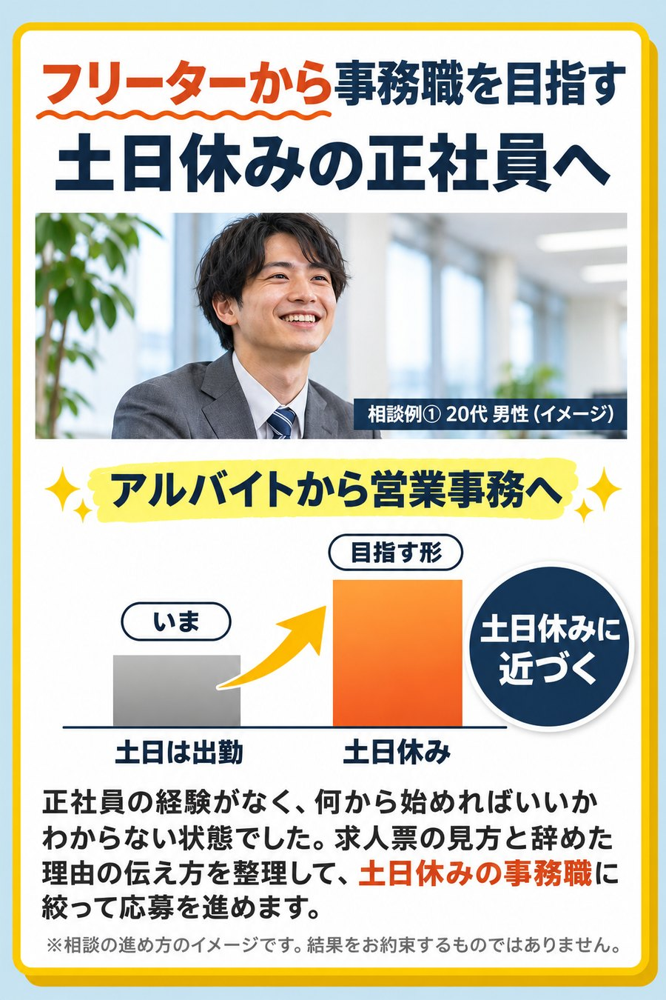
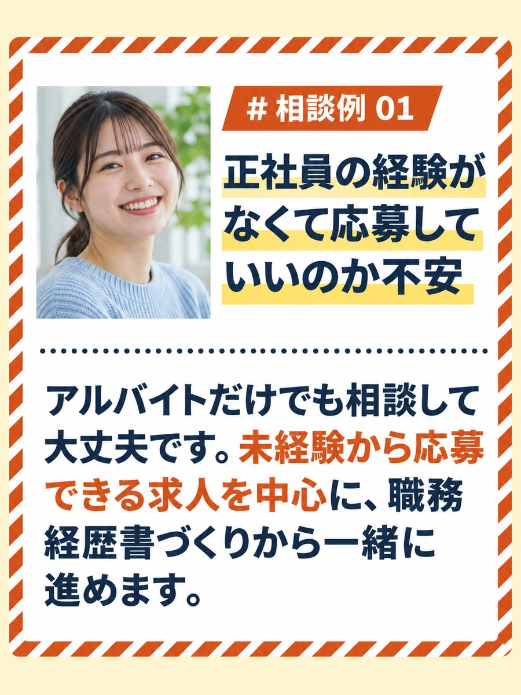
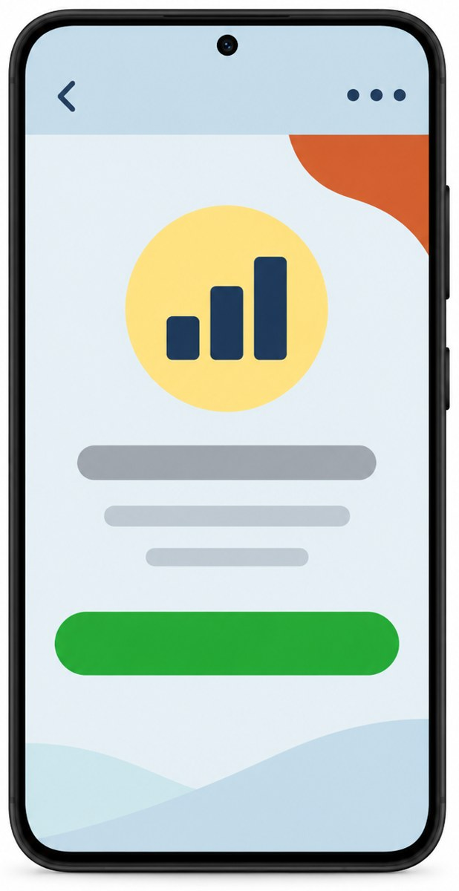
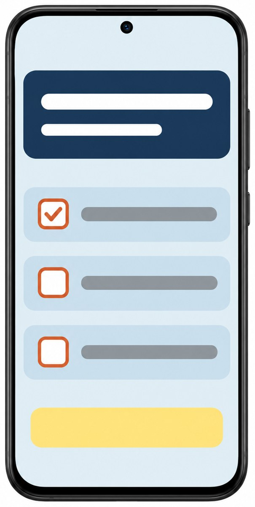

一般事務・営業事務
- 土日祝休みの求人を中心に
- 未経験歓迎のものから
- 残業の少なさも確認
- 勤務地・働き方を相談

LINEで無料相談
20代・未経験・第二新卒の方へ
相談はLINEだけ・電話なし
求人選びから面接練習まで
LINEで無料サポート
あなたと同じ悩みを、
ひとつずつほどいていきます
の「働き方を変える」一歩を、一緒に



仕事でお困りのあなたへ
こんなお悩みありませんか？
 職場の人間関係
職場の人間関係しかも、このまま
我慢して働き続けても、、、
 20代のうちは
20代のうちは 数年後…いまの職場動いた場合
数年後…いまの職場動いた場合
なんてことに、、！
でも、どうすれば…
そんな方は
転職に詳しいプロが
!ただし、注意点が一つ！
転職エージェントは
“自分に合った”
エージェントを選べなければ、
転職成功に
遠ざかってしまいます
そこで

キャリアハックとは
未経験・第二新卒の方の
転職相談を、LINEで受けて
0から内定まで
“すべて”を
サポートします！
あなたの希望を
第一に考え、
最適な転職サポーター
をご紹介
自己分析から
応募の準備までを
“すべて”寄り添える
転職サポーター


だから
相談料は0円
＆
求人紹介まで
ひとりで抱えず
LINEで進められます
¥0転職まで 完全無料
¥0友だち追加だけで登録今すぐ無料で相談するはじめの一歩はLINEのひとことから
まだ決めていなくても
相談だけでもOK！

※求人は時期や地域によって変わります。紹介できる内容は相談時にお伝えします。



※よくあるご相談を例にした内容で、実際の個人の声ではありません。

でも、こんな自分でも
本当に転職できますか？
前職は短期間で
辞めてしまったから
厳しいかも
経験ナシ・学歴ナシの
私でも大丈夫？
自分に合った
仕事がわからない…
同じ悩みを抱える方の相談に、
あなたに合った転職サポーターが
0から全てサポートするので、
理想の働き方をめざせます！
たった1つだけお願い…
ご相談をはじめたあとで、
連絡なしにやめてしまうと、
こちらも進められません。
やめるときは、前日までに一言
LINEで送ってください
STEP2

LINEを友だち追加
STEP3

トーク画面から
今の状況を、ひとこと送る
¥0転職まで 完全無料
¥0友だち追加だけで登録今すぐ無料で相談するQ.電話がかかってきたりしませんか？
A.担当者から電話をかけることはありません。電話で話したいときだけ、つながりやすい時間帯を送ってください。
Q.迷っているだけの段階でも、LINEしていいですか？
A.大丈夫です。迷っている段階の相談を前提にしています。求人を見ずに終わっても、催促はしません。
Q.バイトの経験しかなくても、相談できますか？
A.できます。未経験から応募できる求人を中心に一緒に探します。職務経歴書がまだ無くても、一から作るところから始められます。
Q.なぜ無料なのですか？
A.採用が決まったときに、紹介した人材紹介会社が求人企業から手数料を受け取る仕組みだからです。人材紹介会社は、法律で原則として求職者から手数料を受け取れません（職業安定法 第32条の3 第2項）。あなたに費用はかかりません。